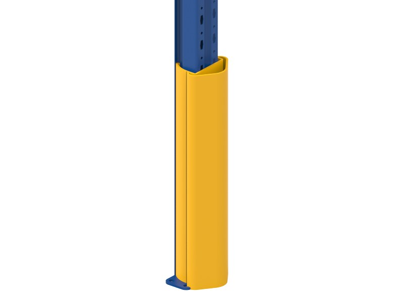

Short. Opinionated. Each article: one thing to do now.
Three articles a week on forklifts, barriers, floor tape and in-shift warehouse self-checks.
 Photo: manufacturer
Photo: manufacturerForklift barriers: steel or polymer, chosen stretch by stretch
Don't replace everything, and don't keep steel where it gets hit every day: a rule for choosing barriers stretch by stretch.
 Photo: manufacturer
Photo: manufacturerForklift blind spots: why drivers miss pedestrians and where to stop collisions
Why forklift drivers miss pedestrians, the 7 warehouse spots where collisions happen, and the order of fixes from barriers and gates to lines, mirrors and the horn.
 Photo: manufacturer
Photo: manufacturerWarehouse safety checklist: a 15-minute walk, 10 points to check
When to walk, which route, what to look for at 10 points and when to act at once: a 15-minute weekly warehouse self-check.
 Photo: manufacturer
Photo: manufacturerGlow in the dark tape for exits: where to apply it so the way out still shows in a power cut
How photoluminescent tape charges, glows and fades, how it differs from reflective tape, the 5 places to apply it on an exit route and how to check it each month.

Photo: manufacturerForklift hit a rack: what to check first and who decides it can stay in use
Five things to do right after an impact, a table of signs on uprights, base plates and bracing, and who can put the rack back into use.
 Photo: manufacturer
Photo: manufacturerFloor paint or floor tape: choosing zone by zone in a factory
The limits of paint and tape, and how to choose by zone: main aisles, corners, rack areas, docks.
 Photo: manufacturer
Photo: manufacturerHow to separate pedestrians and forklifts in a warehouse: where and with what
Crossing points, rack corners, doorways, docks, shortcuts: how to lay out lines, barriers and gates at each spot in the warehouse.
 Photo: manufacturer
Photo: manufacturerFactory floor marking color chart: common 5S practice
Eight floor marking colors commonly used under 5S practice, how to set your own plant chart, and a printout to post at the factory entrance.
Mockup: only the first article has a reading page. The others will be rewritten from Mr. Vuong's 6 LinkedIn posts when the site launches. For now they link to related pages.
What to read first depends on what your warehouse is dealing with
Each article on this page answers one specific warehouse question and ends with one thing to do during the shift. Below is how to choose what to read first and how to use the articles with your warehouse team.
Four topic groups
Articles fall into four groups, the same as the filters at the top of the page. Each group covers a kind of problem you see in a warehouse.
- Forklifts and pedestrians: crossing points, shortcuts, why drivers do not see people on foot
- Barriers: when to keep steel, when to switch to polymer, which stretch to fence first
- Floor tape: marking, anti-slip, reflective, photoluminescent, color charts
- In-shift self-checks: walking the warehouse while forklifts are running, what to look at, what to photograph
Where to start, based on the problem
There is no set order. Start with what your warehouse is dealing with this week.
- Steel barriers at rack ends dented again and again: read forklift barriers, steel or polymer
- People on foot cutting across the forklift lane: read separating pedestrians and forklifts
- Painted lines fading after a few months, or a layout change coming: read floor paint or floor tape
- Each team reads the line colors differently: read the floor marking color chart
- Not sure what the problem is yet: walk the warehouse with the 10-point checklist
Using the articles with your team
The articles are short enough to read at a start-of-shift meeting. The person in charge reads the opening section aloud, then gives the task at the end of the article to one named person.
For example, after the steel or polymer article, the forklift team leader walks along the rack ends and counts the dented barrier sections. After the walkway article, someone stands for five minutes at the busiest crossing and counts how many people walk through without stopping to look. Write the result on the warehouse board and take a photo.
Printable versions to post at the shop floor entrance or hand to team leaders are on the resources page.
What an article can and cannot tell you
An article explains how to think and how to choose, stretch by stretch. It does not replace measuring on site: floor thickness, the real clearance between racks and the vehicle lane, the heaviest vehicle that passes. Technical figures appear in an article only when there is a source, named at the end. Companies should check current occupational safety regulations for each item.
After reading
Photos taken while doing the end-of-article task can be sent as they are. Send them through the survey booking page with an estimated length and the vehicle type, and Thien Khoi will review them and call you back. To look at products first, go to the products page.
Who writes these articles, and are they advertising?
Thien Khoi writes them, and Le Huy Vuong reviews the technical content before publishing. The articles also say where you do not need to buy anything: a side aisle may only need floor lines, and a steel barrier that rarely gets hit can stay. When an article mentions a product, the link goes to the products page so you can see each line's limits.
Where do the figures in the articles come from?
Technical figures go into an article only when there is a source, listed at the end with the access date. Where there is no source, the article stays qualitative and gives no number. For example: a polymer rail flexes and returns to shape within the range its size is designed for. To know which barrier size suits your vehicles, you need an on-site survey.
Can we print the articles for our safety meetings?
Yes. The articles are written to be read in a few minutes at a start-of-shift meeting. For internal use, keep the source note at the end so readers know where any figure came from. For print-ready documents such as the checklist and the floor color chart, register on the resources page and we will send the version you need.
What if my warehouse has a problem no article covers?
Send photos of the spot through the survey booking page or on WhatsApp, with a short note: what happens, in which area, which vehicles pass. Problems many warehouses share become new articles, without the company name or warehouse location. Meanwhile, the 7 warehouse zones may already cover what you need.
Should I read an article first or use the quick selector first?
If you already know the spot to fix, use the quick selector for a starting suggestion, then read the article on the same topic to see why. If you do not know where to start, read a forklift and pedestrian article first, because that is where people and forklifts share the same floor space.